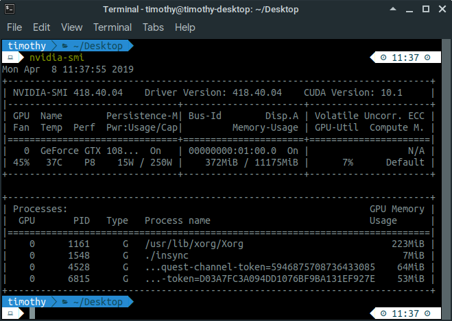
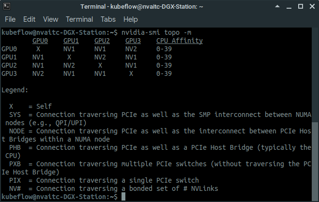
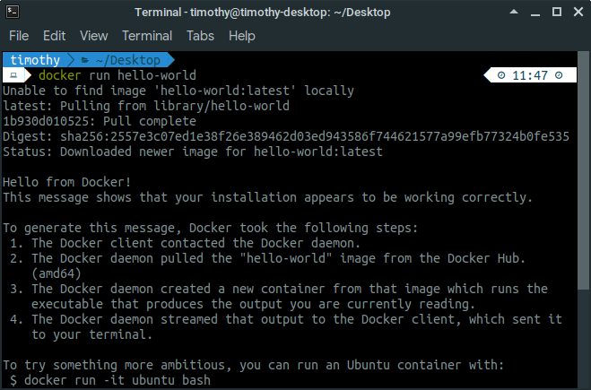
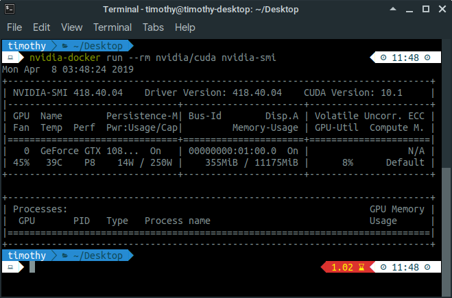

Kubernetes is an open-source container orchestration (management) platform. It was originally designed by Google, and is now maintained by the Cloud Native Computing Foundation. It aims to provide a "platform for automating deployment, scaling, and operations of application containers across clusters of hosts". Such clusters can contain many servers, and it called a Kubernetes cluster.
Minikube is a tool that makes it easy to run a single-node Kubernetes cluster on a system. It includes most components needed for a typical full deployment of Kubernetes, including the CNI plugin, DNS, storage provisioner and so on.
Kubeflow is a machine learning toolkit that is designed to run on top on Kubernetes.
In this guide, you will learn how to set-up your own server to run Kubeflow on Minikube.
nvidia-docker)It is very important that you verify that you meet the following system requirements:
418.x as of March 2019)nvidia-docker)To check your GPU driver, try running nvidia-smi. If you get a command not found error, then you do not have the NVIDIA GPU driver installed. If you do, check the driver version (top of the output). It you need to have driver 410.x or newer, unless you are using the enterprise driver.
If you meet the above requirements (e.g. you are using a NVIDIA DGX system), you are free to skip to Step 7. Else, keep on reading.
To use your NVIDIA GPU for compute tasks like machine learning and deep learning, you will need to install the NVIDIA drivers and CUDA Toolkit.
For this, please make sure that you are on a clean Ubuntu system (no existing NVIDIA drivers or libraries) and that you have sudo (root) permissions. If you're the only user, you probably do. If you're using a shared workstation or server, please approach your administrator.
Download and install NVIDIA drivers and the CUDA Toolkit, we can head over to the NVIDIA website and download the CUDA Toolkit installer, which will install both the CUDA Toolkit, as well as the latest compatible driver.
You'll need to open a new Terminal window:
CTRL + ALT + T , or navigate to your applications menu and launch the Terminal app# <- denotes this line is a comment # navigate to your Downloads folder. Usually, this can be done with: cd ~/Downloads # install the CUDA network repository sudo dpkg -i cuda-repo-ubuntu1804_10.1.105-1_amd64.deb sudo apt-key adv --fetch-keys https://developer.download.nvidia.com/compute/cuda/repos/ubuntu1804/x86_64/7fa2af80.pub sudo apt-get update # install the CUDA toolkit and NVIDIA drivers sudo apt-get install cuda
The installation will take some time to complete (around 30 minutes on a Broadband internet connection).
Please reboot your system before proceeding to the next step.
If the installation has succeeded, the all-important nvidia-smi tool will also have been installed. nvidia-smi will allow you to check the current status of the GPUs in your system.
nvidia-smiOpen a new Terminal and type nvidia-smi. It should produce an output similar to the one below:

If you see that, congratulations! The NVIDIA drivers and CUDA Toolkit have been installed successfully.
If you have multiple GPUs on your system, you can run nvidia-smi topo -m to see how the GPUs are interconnected. This will affect which GPUs you may want to choose to run a multi-GPU training job.

For example, in the above output (DGX Station), GPU0 and GPU3 are connected by two bonded NVLink connections, while GPU0 and GPU1 are connected by one NVLink connection. This means that GPU0 and GPU3 can communicate at a higher bandwidth than possible between GPU0 and GPU1 .
In this step, you will be installing the commonly used Docker runtime for running containers.
In this step, you will be adding the Docker repository to Ubuntu and install Docker from there. Open a new Terminal and execute the following commands. Again, please take note every command is one line.
sudo apt-get install -y apt-transport-https ca-certificates curl software-properties-common curl -fsSL https://download.docker.com/linux/ubuntu/gpg | sudo apt-key add - sudo add-apt-repository "deb [arch=amd64] https://download.docker.com/linux/ubuntu $(lsb_release -cs) stable" sudo apt-get update sudo apt-get install docker-ce docker-ce-cli containerd.io sudo usermod -aG docker $USER
To verify that Docker has been installed correctly, we will be running the hello-world container with the following command:
docker run hello-world
Since the container image hello-world does not yet exist on our system, Docker will pull the image from the Docker Hub before running it. You will see the following output:

Congratulations! Now we have a working container runtime.
In this step, we will install the NVIDIA Container Runtime (also known as nvidia-docker) in order to allow Docker containers to access the GPU. This is required for the applications running in the AI Lab container, such as TensorFlow, PyTorch and RAPIDS, to use the GPU to speed up computations.
The benefit of using nvidia-docker is that we can run various CUDA applications and frameworks on a wide range of systems without needing to configure the host system for our own application. For example, OpenPose recommends CUDA 8.0, and if the host system has a different version of CUDA, the application is unlikely to work. With nvidia-docker, as long as our host system has CUDA 8.0 or newer, the application will work.
nvidia-dockerIn this step, you will be downloading and installing the NVIDIA Container Runtime. Please run the following commands in Terminal, and again note that every command is one line.
# adding the repository curl -s -L https://nvidia.github.io/nvidia-docker/gpgkey | sudo apt-key add - distribution=$(. /etc/os-release;echo $ID$VERSION_ID) curl -s -L https://nvidia.github.io/nvidia-docker/$distribution/nvidia-docker.list | sudo tee /etc/apt/sources.list.d/nvidia-docker.list sudo apt-get update # install nvidia-docker sudo apt-get install nvidia-docker2 # restart the docker daemon sudo pkill -SIGHUP dockerd
nvidia-docker is installed correctlyTo verify that nvidia-docker is installed correctly, you can run the following command to execute nvidia-smi inside a docker container.
nvidia-docker run --rm nvidia/cuda nvidia-smi # this also works, and is functionally equivalent: docker run --runtime=nvidia --rm nvidia/cuda nvidia-smi
Since you probably don't have the nvidia/cuda image on your system, Docker will go ahead and pull it from the Docker Hub before running it.
If you see the nvidia-smi output, then your installation is working:

In order for Kubeflow to work properly, we need to make the NVIDIA Container runtime the default runtime for Docker. To achieve this, we need to edit the /etc/docker/daemon.json file:
sudo nano /etc/docker/daemon.json
Add in "default-runtime": "nvidia", into the file such that your file looks something like this:
{
"default-runtime": "nvidia",
"runtimes": {
"nvidia": {
"path": "nvidia-container-runtime",
"runtimeArgs": []
}
}
}
Next, we will restart the docker daemon to take into account our new changes and test if the settings worked:
sudo pkill -SIGHUP dockerd docker run --rm nvidia/cuda nvidia-smi
If you see the nvidia-smi output, you're good to go.
nvidia-docker)In this step, you will download and install two command-line utilities:
kubectl application needed to interface with Kubernetes clustersminikube application used to manage minikube nodescurl -Lo kubectl \ https://storage.googleapis.com/kubernetes-release/release/$(curl -s https://storage.googleapis.com/kubernetes-release/release/stable.txt)/bin/linux/amd64/kubectl chmod +x kubectl curl -Lo minikube \ https://storage.googleapis.com/minikube/releases/latest/minikube-linux-amd64 chmod +x minikube sudo su root cp kubectl /usr/local/bin/ && rm kubectl cp minikube /usr/local/bin && rm minikube exit
export MINIKUBE_WANTREPORTERRORPROMPT=false export MINIKUBE_HOME=$HOME export CHANGE_MINIKUBE_NONE_USER=true export KUBECONFIG=$HOME/.kube/config sudo -E minikube start --vm-driver=none --feature-gates=DevicePlugins=true
Be patient as you wait for your minikube cluster to spin up. It might appear to freeze at some stage as it needs to download a fair number of container images.
The NVIDIA device plugin is required for Kubernetes to be aware of NVIDIA GPUs so it can monitor their availability and schedule them for pods that request for them (with the nvidia.com/gpu resource type).
To installing the NVIDIA device plugin, run the following command:
kubectl create -f \ https://raw.githubusercontent.com/NVIDIA/k8s-device-plugin/1.0.0-beta/nvidia-device-plugin.yml
The NVIDIA device plugin will now begin to deploy. Wait around 30 seconds, and you will be able to check if the Kubernetes cluster is now GPU-aware. Run the following command to verify this:
kubectl get nodes \ -o=custom-columns=NAME:.metadata.name,GPUs:.status.capacity.'nvidia\.com/gpu'
nvidia-docker)We will now install two additional utilities that can be thought of as third-party package managers for Kubernetes. These are called Helm (used to deploy Helm charts) and well as ksonnet (used to deploy ksonnet prototypes).
wget \ https://storage.googleapis.com/kubernetes-helm/helm-v2.13.1-linux-amd64.tar.gz tar -zxvf helm-v2.13.1-linux-amd64.tar.gz sudo mv linux-amd64/helm /usr/local/bin/helm # block until helm has fully initialised helm init --wait
wget \ https://github.com/ksonnet/ksonnet/releases/download/v0.13.1/ks_0.13.1_linux_amd64.tar.gz tar -xzf ks_0.13.1_linux_amd64.tar.gz sudo cp ks_0.13.1_linux_amd64/ks /usr/local/bin/ # test with the ks command ks
Now we can finally move on to install the star of the show: Kubeflow! The deployment is relatively straightforward:
# environment variables for deployment
export KUBEFLOW_TAG=v0.4.1
export KUBEFLOW_SRC=/home/kubeflow/kf_src
export KFAPP=kf_app
mkdir ${KUBEFLOW_SRC}
cd ${KUBEFLOW_SRC}
curl \
https://raw.githubusercontent.com/kubeflow/kubeflow/${KUBEFLOW_TAG}/scripts/download.sh | bash
${KUBEFLOW_SRC}/scripts/kfctl.sh init ${KFAPP} --platform none
cd ${KFAPP}
${KUBEFLOW_SRC}/scripts/kfctl.sh generate k8s
${KUBEFLOW_SRC}/scripts/kfctl.sh apply k8s
Please be aware that an error in deployment may not be immediately obvious. Do pay attention to the last few lines of output to make sure that no error is being displayed. Use the next command to wait for the Kubeflow pods to have started up in a healthy state:
Kubectl get pods -n kubeflow # all pods should be ready
Next, we want to permanently expose the Kubeflow web UI as a nodeport on our system:
kubectl get services --all-namespaces kubectl expose service ambassador \ --type=NodePort --name kubeflow-ui --namespace kubeflow
nvidia-docker)Congratulations! You have reached the end of this guide.
Learn more about: